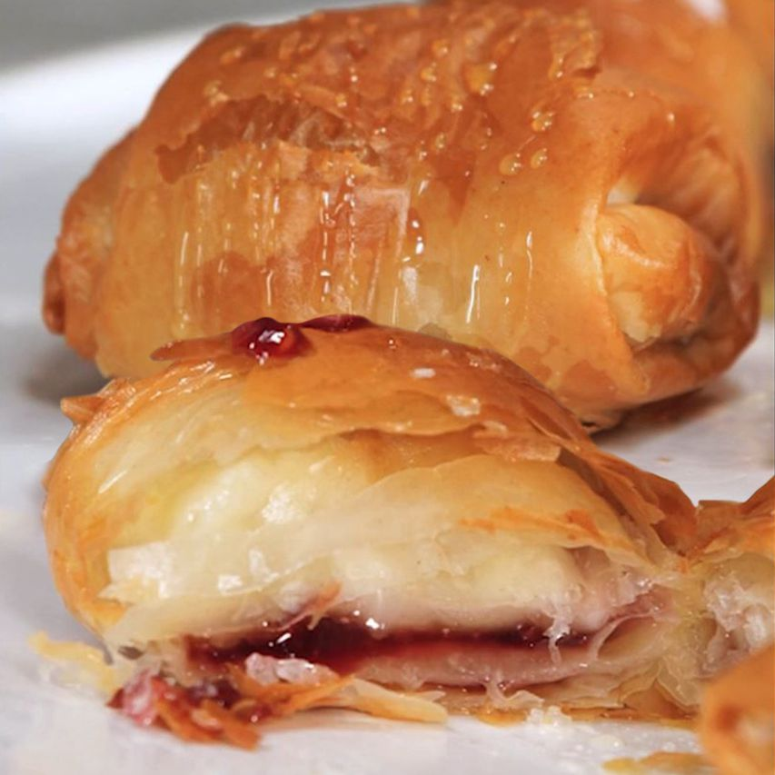

Scrumptuous Air-Fried Raspberry Brie Bites
Description
Melty brie and sweet raspberry jam come together with a crispy phyllo dough shell.
Easily made for a quick treat for guests or a personal indulgence.
This recipe can easily be modified, swapping in your favorites cheese or jam. Experiment and find your own personal favorite.

Ingredients
- 1 (8 oz) round Brie cheese
- 1 (8 oz) package phyllo dough, thawed
- 1 cup raspberry jam
- 1 cup butter, melted
- 2 tbsps honey
- flakey salt to taste
Steps
- Slice the brie into squares about 1/2 inch thick and 1 to 1 1/2 inches wide.
- Roll out 1 sheet of phyllo dough vertically on a large work surface. Brush the bottom half of the dough with melted butter, then fold the top half over onto itself.
- Place 1 piece of cheese in the bottom center of the dough, about 2 inches from the edges. Spoon about 2 teaspoons raspberry jam onto the cheese. Brush melted butter around the rest of the dough.
- Fold in the bottom 2 inches of dough over the cheese, then fold in both sides. Brush more butter onto the remaining dough, then carefully roll the filling upwards until it is wrapped fully. Brush more butter on top and set into the air fryer try.
- Fold in the bottom 2 inches of dough over the cheese, then fold in both sides. Brush more butter onto the remaining dough, then carefully roll the filling upwards until it is wrapped fully. Brush more butter on top and set into the air fryer try.
- Air fry in batches to avoid overcrowding until golden-brown, 4 to 5 minutes. Garnish with a thin drizzle of honey and a pinch of flakey salt. Serve immediately.
Credits: Annie Campbell, allrecipes.com